Software for analysing the Power to Detect Change
LAS Scott-Hayward and ML Mackenzie
2025-03-13
UsingMRSeaPower.RmdThis vignette constitutes work carried out at the Centre for Research into Ecological and Environmental Modelling (CREEM) at the University of St. Andrews.
Please reference this document as: Scott-Hayward, L.A.S. and Mackenzie, M.L. (2017). Vignette for the MRSeaPower Package v2.0: Software for analysing the Power to Detect Change. Centre for Research into Ecological and Environmental Modelling, University of St Andrews.
Initial Setup
- Load data (when loaded the dataframe is called
nysted)
data("nystedA_slim")- Load associated data:
- study area boundary (polygon)
- windfarm location boundary (polygon)
- prediction grid (regular coordinate grid with covariates)
The names in the dataframe for these are the same as those given when loading.
-
Add two new columns to the dataset.
- For the modelling process later, it will be useful to define a potential blocking structure, here we use unique transect label.
- We also create an identifier defining the fold of data for each data point for use in cross-validation calculation later. By defining the blocking structure, if any correlation is found to be present in model residuals, the nature of it will be preserved in each fold.
nysted$panelid<-as.numeric(nysted$unique.transect.label)
nysted$foldid<-getCVids(nysted, 10, 'panelid')- Make a plot of the data and windfarm boundary to confirm all looks ok.
library(ggplot2)
ggplot() +
geom_point(data = nysted, aes(x.pos, y.pos), col="grey") +
geom_path(data=nysted.bndwf, aes(x.pos, y.pos)) +
geom_path(data=nysted.studybnd, aes(x.pos, y.pos)) +
coord_equal() + theme_bw()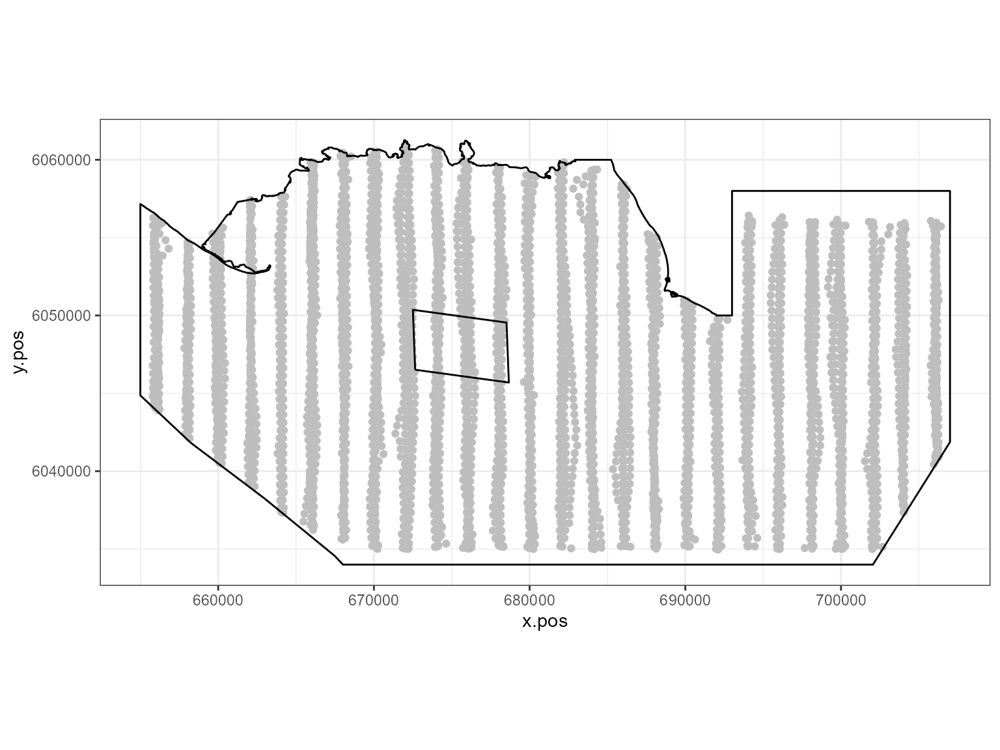
Figure showing the survey effort and proposed windfarm site for the Nysted Windfarm.
Model Fitting
Now that we have our data in order, we can begin the modelling process. This practical fits a very simplistic model (linear terms only) in order that you may progress to the power analysis step quickly.
- Fit an initial model
initialModel<-gamMRSea(response ~ 1 + as.factor(yearmonth)+depth +
x.pos + y.pos + offset(log(area)), data=nysted, family=quasipoisson)- Use an ANOVA from the
MRSealibrary to check that the model covariates should all be selected.
anova(initialModel, test='F')## Analysis of Deviance Table (Type II tests)
## Marginal Testing
##
## Response: response
## Error estimate based on Pearson residuals
##
## SS Df F Pr(>F)
## as.factor(yearmonth) 19421 5 64.781 < 2.2e-16 ***
## depth 26011 1 433.800 < 2.2e-16 ***
## x.pos 3177 1 52.980 3.798e-13 ***
## y.pos 14010 1 233.660 < 2.2e-16 ***
## Residuals 363537 6063
## ---
## Signif. codes: 0 '***' 0.001 '**' 0.01 '*' 0.05 '.' 0.1 ' ' 1- All covariates are significant so we continue to check if there is residual correlation based on this data/model combination using an Empirical Runs Test and an autocorrelation function (acf) plot.
This empirical test involves generating several sets of data from the fitted model (under independence), fitting the model each time and calculating the runs test statistic based on the model residuals in each case. This forms the reference distribution for the runs test statistic which we have observed in this case. If our observed test statistic is typical of that encountered under independence then this provides no evidence for any correlation, however if the observed test statistic is peculiar under independence then this provides evidence for residual correlation.
bestModel<-initialModel- Generate some independent data:
nsim<-550
d<-as.numeric(summary(bestModel)$dispersion)
newdat<-generateNoise(nsim, fitted(bestModel), family='poisson', d=d)Loop over all simulated sets of data to harvest the empirical distribution of runs test statistics
If you use
dots=TRUEthen a progress bar will be printed.
empdistribution<-getEmpDistribution(n.sim = nsim,
simData=newdat,
model = bestModel,
data = nysted,
plot=FALSE,
returnDist = TRUE,
dots=FALSE)- Find the runs test result for our model residuals and plot the acf function for comparison.
runsTest(residuals(bestModel, type='pearson'), emp.distribution = empdistribution)
Runs Test - Two sided; Empirical Distribution
data: residuals(bestModel, type = "pearson")
Standardized Runs Statistic = -55.11, p-value < 2.2e-16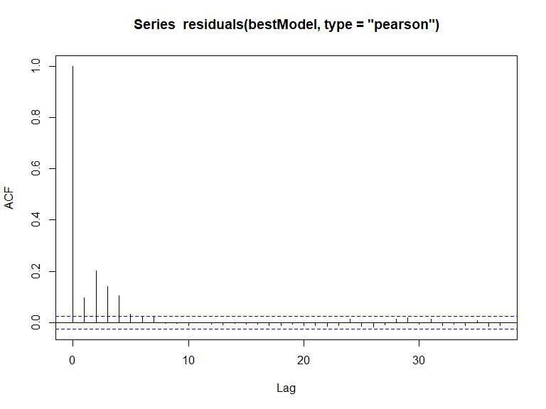
In this case, we have evidence that the model residuals (Pearsons) are correlated ( value is small). This conclusion is consistent with the acf plot.
Data generation
- Generate noisy correlated data.
newdat<-generateNoise(nsim, fitted(bestModel), family='poisson', d=d)
corrs<-getCorrelationMat(panel = nysted$panelid, data=nysted$response, dots = FALSE)
newdat.ic<-generateIC(nysted, corrs, "panelid", newdat, nsim=nsim, dots = FALSE)- Given that we know we have correlation present, now we must add a
panel structure to our model. This means that now when we produce
summaries or use the anova function, the
gamMRSeabased functions will be called and the robust standard errors used for inference.
bestModel<-make.gamMRSea(bestModel, panelid=nysted$panelid)Data generation diagnostics
Assess the data generation process using:
plotMeanplotVarianceacfplotsand
quilt.plotsplotMean
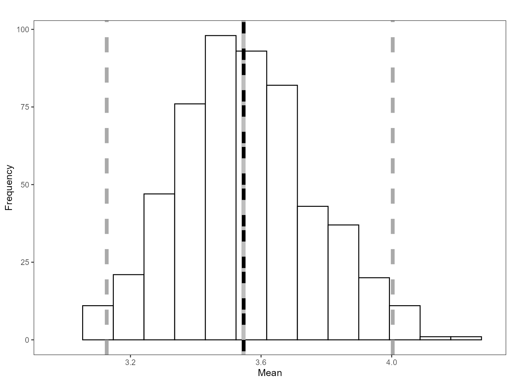
Histogram of the mean of the simulated data, with the red line representing the mean of the original data and the blue line is the mean of the fitted values from the data generation model. The grey lines represent 95% confidence intervals for the simulated mean.
- if you want to change the histogram ‘bin’ size or the confidence
level of the intervals then there are options
binsizeandquants. The defaults for these are 15 and c(0.025,0.975).
plotVariance
plotVariance(bestModel, newdat.ic, n.sim=nsim)![Top: Figure showing the mean-variance relationship for the data generation model (red line) and the mean relationship for all models fitted to the simulated data (grey line), with 95 percentile based confidence intervals for the relationship (grey shading). The blue line is the assumed mean-variance relationship in the original model used to generate the new data (here overplotting the grey line), while the red line is the original data/model combination. Bottom: Histogram of the estimated dispersion parameters from the simulated data. The blue dashed line represents the dispersion parameter from the data generation model.](UsingMRSeaPower_files/figure-html/casevar-1.png)
Top: Figure showing the mean-variance relationship for the data generation model (red line) and the mean relationship for all models fitted to the simulated data (grey line), with 95 percentile based confidence intervals for the relationship (grey shading). The blue line is the assumed mean-variance relationship in the original model used to generate the new data (here overplotting the grey line), while the red line is the original data/model combination. Bottom: Histogram of the estimated dispersion parameters from the simulated data. The blue dashed line represents the dispersion parameter from the data generation model.
if you want to change the confidence level, there is a
quantsoption as for theplotMeanfunction.There is also an option to change the number of cut points - i.e. how many bins/buckets the fitted values are split into.
You may also store some of the outputs from the model using
store.data=TRUE.
Remember, not all models fitted to each simulated set will be appropriate. Some may exhibit extreme estimates for coefficient values.
-
badsim.idis placed in your workspace to identify bad simulations. To prevent issues these are removed.
length(badsim.id)## [1] 33
newdat.ic<-newdat.ic[,-badsim.id]
dim(newdat.ic)## [1] 6072 517- Re-assessing the dimensions of the newdat.ic, we see that we now have fewer than 550 generated data sets.
- ACF plots:
#par(mfrow=c(2,2))
acf(nysted$response, main='Data')
ACF plots for the response data (top left), an example of the simulated data (top right), the pearsons residuals for the data generation model (bottom left) and the residuals for a model fitted to the generated data.
acf(newdat.ic[,10], main='sim data')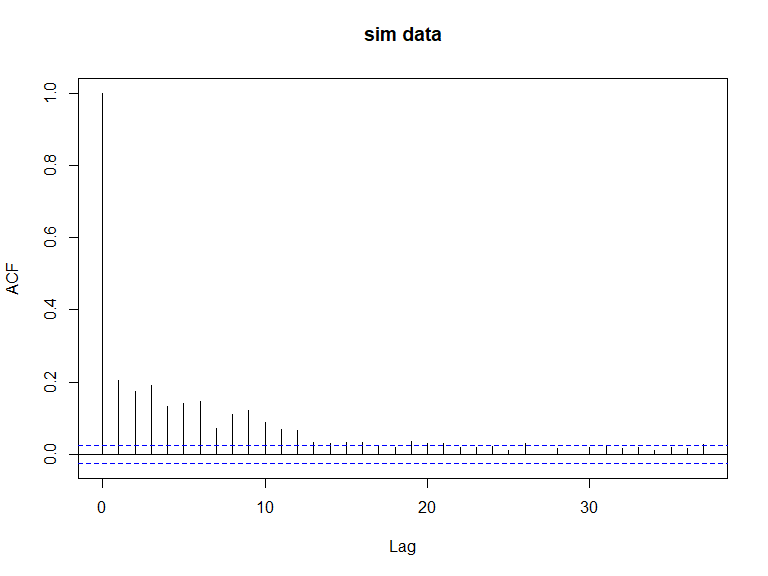
ACF plots for the response data (top left), an example of the simulated data (top right), the pearsons residuals for the data generation model (bottom left) and the residuals for a model fitted to the generated data.

ACF plots for the response data (top left), an example of the simulated data (top right), the pearsons residuals for the data generation model (bottom left) and the residuals for a model fitted to the generated data.
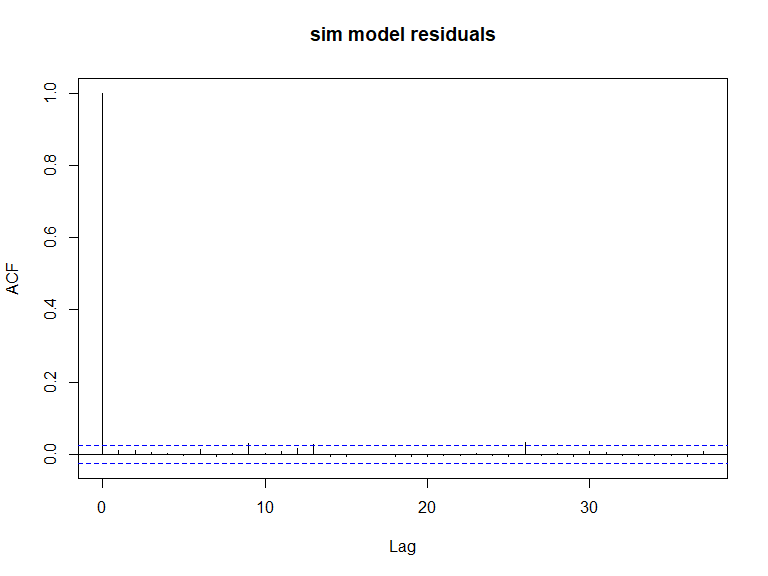
ACF plots for the response data (top left), an example of the simulated data (top right), the pearsons residuals for the data generation model (bottom left) and the residuals for a model fitted to the generated data.
For interest, you can see what the ACF plots would have looked like if we had used the independent data.
#par(mfrow=c(2,2))
acf(nysted$response, main='Data')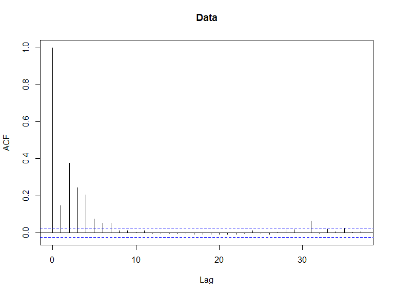
ACF plots for the response data (top left), an example of the simulated data (top right), the pearsons residuals for the data generation model (bottom left) and the residuals for a model fitted to the generated data.
acf(newdat[,10], main='sim data')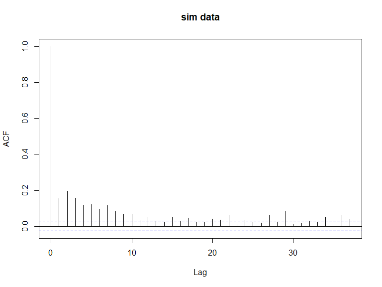
ACF plots for the response data (top left), an example of the simulated data (top right), the pearsons residuals for the data generation model (bottom left) and the residuals for a model fitted to the generated data.
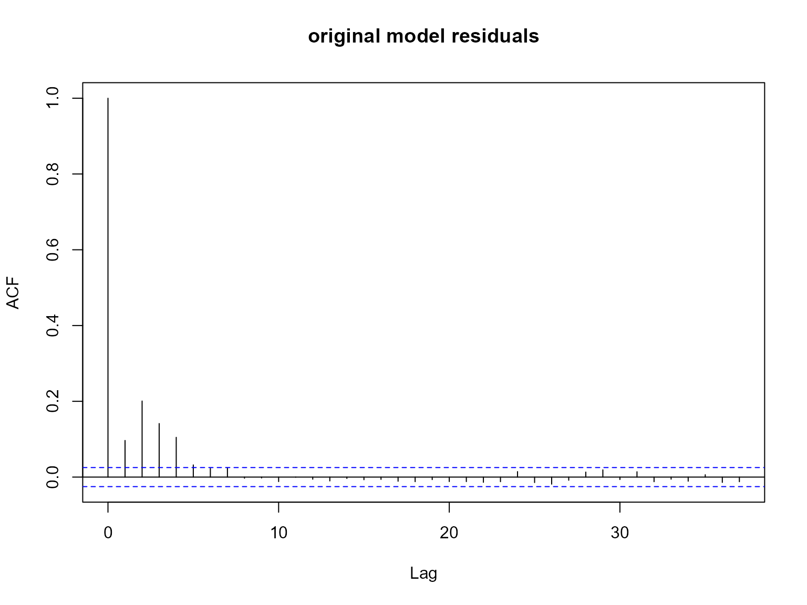
ACF plots for the response data (top left), an example of the simulated data (top right), the pearsons residuals for the data generation model (bottom left) and the residuals for a model fitted to the generated data.
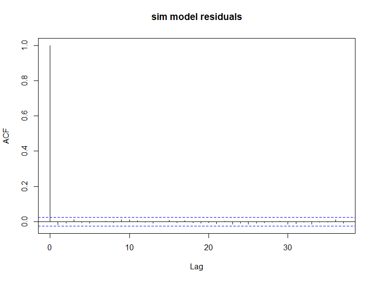
ACF plots for the response data (top left), an example of the simulated data (top right), the pearsons residuals for the data generation model (bottom left) and the residuals for a model fitted to the generated data.
- Quilt plots to show the data spatially.
The single simulated data example shows the extent of the variability encountered across simulations but is broadly similar to the fitted values.
require(fields)
par(mfrow=c(2,2))
quilt.plot(nysted$x.pos, nysted$y.pos, nysted$response, main='Original Data',
ncol=20, nrow=20, asp=1)
quilt.plot(nysted$x.pos, nysted$y.pos, fitted(bestModel), main='Fitted Values',
ncol=20, nrow=20, asp=1)
quilt.plot(nysted$x.pos, nysted$y.pos, newdat.ic[,1], main='Simulated Data Example',
ncol=20, nrow=20, asp=1)
quilt.plot(nysted$x.pos, nysted$y.pos, apply(newdat.ic, 1, mean), main='Mean Simulated Data',
ncol=20, nrow=20, asp=1)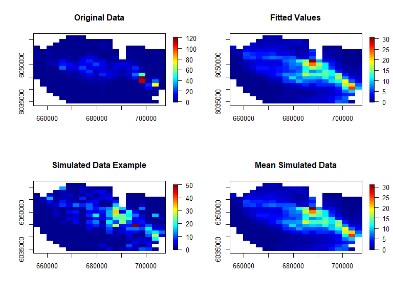
Figure showing the spatial distribution of the original data (top left), the fitted values from the model (top right), an example of the simulated data (bottom left) and the mean of all simulated data (bottom right).
The extent of the bias in the generation process is also evidence below with no concerning patterns
par(mfrow=c(1,1))
quilt.plot(nysted$x.pos, nysted$y.pos, apply(newdat.ic, 1, mean) - fitted(bestModel),
ncol=20, nrow=20)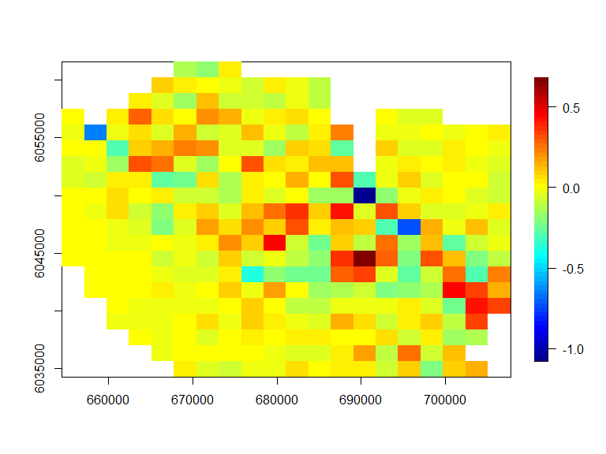
Figure showing the average simulated value minus the “true” value under the model (simulating the data) at each location.
Inducing a 20% site-wide decline
In order to impose change on our generated data we need to know what the post-change result is and how many simulations are required. Naturally, we also need to know what model/data combination we are using to underpin the spatially explicit power analysis.
In this case, we wish to reduce overall numbers by 20% and so the
post-change situation has 80% of the abundance observed pre-change (and
so truebeta is set to be 0.8).
We choose 500 simulations for this analysis and we use the
genChangeData function to give us our simulated sets.
Note that we may not use all 500 sets for the power analysis but may as well generate more than we need.
Generate data
- Induce change in post impact data
truebeta<-0.80
impdata.ny<-genChangeData(truebeta*100, model = bestModel, data = nysted,
panels = "panelid")- As a sense check, it is wise to summarise our generated data pre and post change to ensure our desired increase/decrease has been observed (in this case a 20% decline in average numbers). We can also check at this point that we have equal numbers of observations before and post event.
require(dplyr)
t<-group_by(impdata.ny, eventphase)%>%
summarise(sum=sum(truth), mean=mean(truth), n=n())
t
[38;5;246m# A tibble: 2 × 4
[39m
eventphase sum mean n
[3m
[38;5;246m<dbl>
[39m
[23m
[3m
[38;5;246m<dbl>
[39m
[23m
[3m
[38;5;246m<dbl>
[39m
[23m
[3m
[38;5;246m<int>
[39m
[23m
[38;5;250m1
[39m 0
[4m2
[24m
[4m1
[24m535. 3.55
[4m6
[24m072
[38;5;250m2
[39m 1
[4m1
[24m
[4m7
[24m228. 2.84
[4m6
[24m072To assess the imposed change visually, it is easiest to look at the
difference between the before and after surfaces. However, the survey
data is not regularly spaced making the ggplot2 plotting
engine difficult to use.
I have chosen here to make a
ggplot2based plot but if you would rather, you could equally do this usingquilt.plotwhich automatically uses the mean in each pixel.-
Here we turn the data into a raster (regular grid) and take the mean of any cells occupying the same cell on the grid.
- Note that this is done automatically when using
quilt.plotwith nrows/ncols used to determine the grid size. - the default for
ggplot2is to plot all the data in order, thus the final image shows only the last value of a particular grid cell (as opposed to the mean).
- Note that this is done automatically when using
Rasterise the before and after data:
rdf1<-make.raster(ncell.y=60,
xyzdata=impdata.ny[impdata.ny$eventphase==0,c("x.pos", "y.pos", "truth")],
z.name = "Mean.count")
rdf2<-make.raster(ncell.y=60,
xyzdata=impdata.ny[impdata.ny$eventphase==1,c("x.pos", "y.pos", "truth")],
z.name="Mean.count")
rdf<-rbind(data.frame(rdf1, evph=0), data.frame(rdf2, evph=1))- Find the percentage change in each grid cell (you could do this for absolute difference if you prefer)
pct.change<-((rdf$Mean.count[rdf$evph==1] - rdf$Mean.count[rdf$evph==0])/
rdf$Mean.count[rdf$evph==0])*100- Plot the data
ggplot( NULL ) + geom_raster( data = rdf1 , aes( x , y , fill = pct.change ) ) +
scale_fill_gradientn(colours=mypalette,values=c(0,1), space = "Lab",
na.value = "grey50", guide = "colourbar") +
theme_bw() + coord_equal()## Warning: Raster pixels are placed at uneven horizontal intervals and will be shifted
## ℹ Consider using `geom_tile()` instead.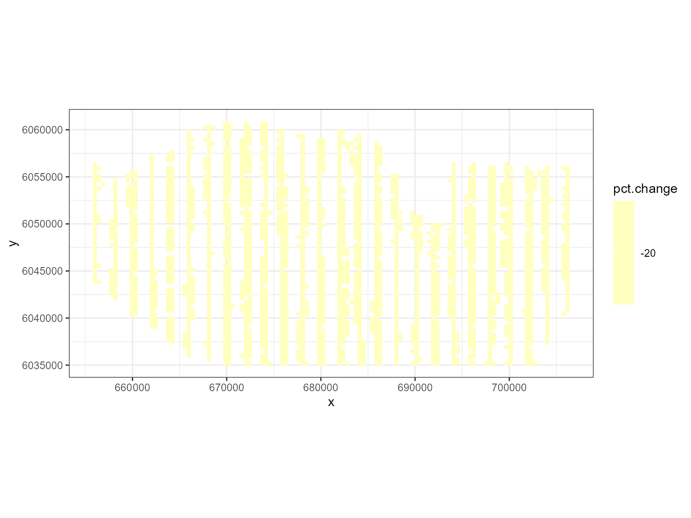
- We can generate noisy data, based on the assumed model (‘bestModel’) and add any umodelled patterns to give us realistic data.
nsim=500
# add noise
newdata.ny.imp<-generateNoise(nsim, impdata.ny$truth, family='poisson',
d=summary(bestModel)$dispersion)
# add correlation
newdatcor.ny.imp<-generateIC(data = impdata.ny, corrs = rbind(corrs,corrs),
panels = 'panels', newdata = newdata.ny.imp, nsim = nsim,
dots = FALSE)- We must then update the model to use the new data
(
newdatcor.ny.imp), theeventphaseterm and the panel structure for the new data (twice as many panels).
nysim_glm<-update(bestModel, newdata.ny.imp[,1]~. + eventphase, data=impdata.ny)
nysim_glm$panels<-impdata.ny$panelsUpdate empirical distribution and prediction grid
- To ensure we have a reference distribution to run the Empirical Runs Test in each case, we use the independent data.
- be sure that you use the independent data to generate the distribution!
empdistpower.ny<-getEmpDistribution(n.sim = nsim, simData=newdata.ny.imp,
model = nysim_glm, data = impdata.ny, plot=FALSE,
returnDist = TRUE, dots=FALSE)- Create a suitable prediction grid.
We must make a prediction grid that allows prediction for pre and post event
-
We must also choose a year/month combination
- Here I have chosen a combination baesd on the output from the
partial plots of the model.
- This year/month combination has a high abundance, but not too much uncertainty.
- Here I have chosen a combination baesd on the output from the
partial plots of the model.
Additionally if an offset is present in the model, when setting up the prediction grid the area of each grid cell should be provided so that an accurate estimate of the abundance can be made at the outputs stage.
predictdata<-rbind(data.frame(nysted.predgrid[,2:8], yearmonth='2001/2',
area=nysted.predgrid$area, eventphase=0),
data.frame(nysted.predgrid[,2:8], yearmonth='2001/2',
area=nysted.predgrid$area, eventphase=1))Power Analysis
- Now we are ready to run the power analysis function using multiple cores, if possible (nCores=2 here) and it’s best to save the output for further scrutiny.
- I suggest that initially you try some low number of simulations to see how long it takes on your machine. If you can, try using two cores.
nsim=50
nysted.power.oc<-powerSimPll(newdatcor.ny.imp, nysim_glm, empdistpower.ny, nsim=nsim,
powercoefid=length(coef(nysim_glm)), predictionGrid=predictdata,
g2k=NULL, splineParams=NULL, n.boot=100, nCores = 2)- To run the null distribution, we can double the number of simulations as it is faster.
nsim=100
nysted.power.oc.null<-pval.coverage.null(newdat.ind = newdata.ny.imp,
newdat.corr = newdatcor.ny.imp, model = nysim_glm,
nsim = nsim, powercoefid = length(coef(nysim_glm)))Power Outputs:
- Summary:
summary.gamMRSea.power(nysted.power.oc, nysted.power.oc.null, truebeta=log(truebeta))$power
$power$model
[1] 70
$power$null
[1] 6
$coverage
$coverage$model.coverage
[1] 94
$coverage$null.coverage
[1] 94
$summary
Abundance LowerCI UpperCI
Before 665944.1 546538.9 795944.3
After 530318.5 427783.1 619056.9
$modeltype
[1] "count"
$truebeta
[1] -0.2231436
$nsims
[1] 50 50
attr(,"class")
[1] "summary.gamMRSea.power"- Burden of proof plot:
powerPlot(nysted.power.oc)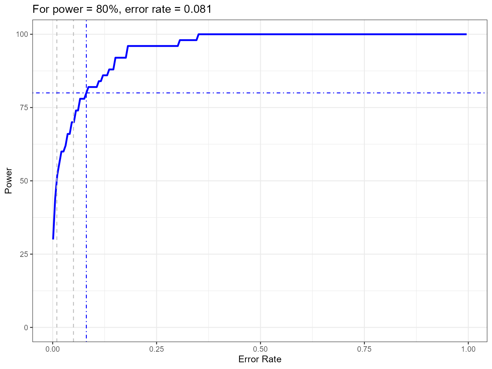
Figure showing how the power to detect change varies with the error rate chosen for the Forth and Tay redistribution analysis. The first grey dashed line is at 1% and the second at 5%, traditionally values used as -value cutoffs. The blue dashed lines indicate the error rate required to get a power of 80%. The value is given in the title.
- Assessment of predictions/differences
- remember if you wish to plot these yourself, you can store the
output using
returndata=TRUE.
plot.preds(nysted.power.oc, cellsize=c(1000,1000))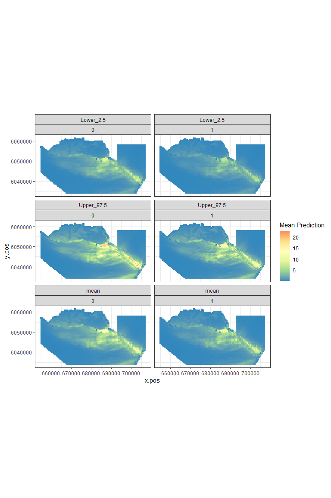
Figure showing the mean (middle), lower 2.5% (top) and upper 97.5% (bottom) of predicted animal counts before (left) and after (right) the event.
plot.diffs(nysted.power.oc, cellsize=c(1000, 1000))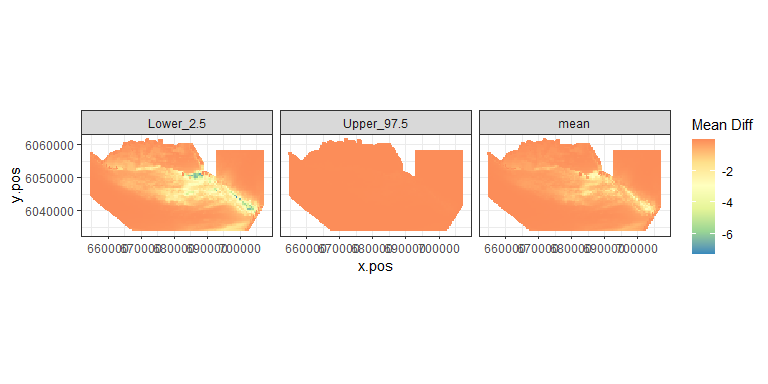
Figure showing the mean (middle), lower 2.5% (left) and upper 97.5% (right) of estimated differences between before and after the event. (difference = post - pre)
- Spatially Explicit Differences
plot.sigdiff(nysted.power.oc,
coordinates = predictdata[predictdata$eventphase==0,c('x.pos', 'y.pos')],
tailed='two', error.rate = 0.05, gridcell.dim = c(1000,1000))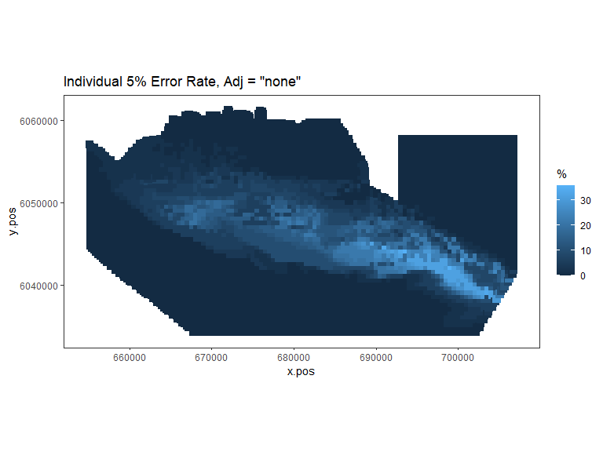
Figure showing, for every grid cell, the proportion of simulations that showed a significant difference.
plot.sigdiff(nysted.power.oc,
coordinates = predictdata[predictdata$eventphase==0,c('x.pos', 'y.pos')],
tailed='two', error.rate = 0.05, adjustment='sidak', gridcell.dim = c(1000,1000))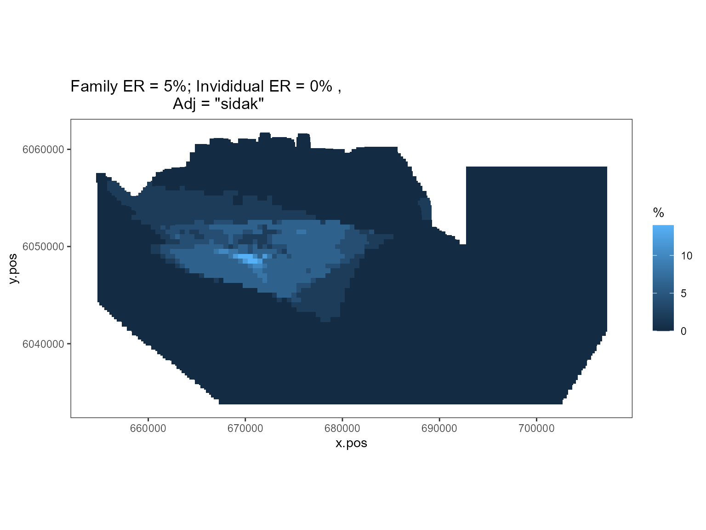
Figure showing, for every grid cell, the proportion of simulations that showed a significant difference (with Sidak adjustment for family error rate of 0.05).
Try using the bonferroni adjustment and see if there are any differences in outputs.
Inducing a redistribution: a 50% decline in the wind farm footprint and a re-distribution to the surrounding region
In this case, we wish to depress animal numbers inside a polygon (which represents the footprint of the wind farm in this case). Here we choose to have a 50% decline of animal counts within the footprint after the event has occurred and an inflation of numbers elsewhere to compensate.
- First we are going to add the buffer to the windfarm footprint. I have chosen a 2 km buffer.
- Handily, there is a function in the
rasterpackage that computes this, although it requires the polygon to be of the classSpatialPolygons, which makes things a bit messy.
require(raster)
bndwf_buf<-data.frame(buffer(SpatialPolygons(list(
Polygons(list(Polygon(nysted.bndwf)),ID = 1))),width=2000)@
polygons[[1]]@Polygons[[1]]@coords)
names(bndwf_buf)<-c('x.pos', 'y.pos')
detach(package:raster)Data Generation:
- Now we can generate our redistribution data:
- Note that we have the bestModel from earlier so we can use it again.
truebeta<-0.5
impdata.nyre<-genChangeData(truebeta*100, model = bestModel, data = nysted,
panels = "panelid", eventsite.bnd = bndwf_buf)
impdata.nyre$redistid<-paste(impdata.nyre$eventphase, impdata.nyre$noneventcells)
t<-group_by(impdata.nyre, redistid)%>%
summarise(sum=sum(truth), mean=mean(truth), n=n())
t
[38;5;246m# A tibble: 4 × 4
[39m
redistid sum mean n
[3m
[38;5;246m<chr>
[39m
[23m
[3m
[38;5;246m<dbl>
[39m
[23m
[3m
[38;5;246m<dbl>
[39m
[23m
[3m
[38;5;246m<int>
[39m
[23m
[38;5;250m1
[39m 0 0
[4m2
[24m060. 4.65 443
[38;5;250m2
[39m 0 1
[4m1
[24m
[4m9
[24m475. 3.46
[4m5
[24m629
[38;5;250m3
[39m 1 0
[4m1
[24m030. 2.33 443
[38;5;250m4
[39m 1 1
[4m2
[24m
[4m0
[24m505. 3.64
[4m5
[24m629
rdf1<-make.raster(ncell.y = 60,
xyzdata =impdata.nyre[impdata.nyre$eventphase==0,c('x.pos', 'y.pos', 'truth')],
z.name = 'Mean.count')
rdf2<-make.raster(ncell.y = 60,
xyzdata = impdata.nyre[impdata.nyre$eventphase==1,c('x.pos', 'y.pos', 'truth')],
z.name = 'Mean.count')
rdf<-rbind(data.frame(rdf1,evph=0) , data.frame(rdf2, evph=1))
pct.change<-((rdf$Mean.count[rdf$evph==1] - rdf$Mean.count[rdf$evph==0])/
rdf$Mean.count[rdf$evph==0])*100
ggplot( NULL ) + geom_raster( data = rdf1 , aes( x , y , fill = pct.change ) ) +
scale_fill_gradientn(colours=mypalette,
values = c(0,0.1, 0.2, 0.3, 0.4, 0.5, 0.6,0.8,1, 10),
space = "Lab", na.value = "grey50",
guide = "colourbar") +
theme_bw() + coord_equal()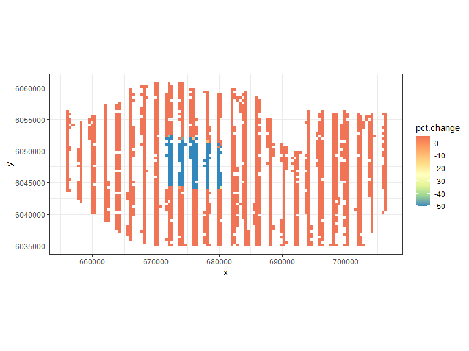
- Make noisy/correlated data:
nsim=500
newdata.ny.impre<-generateNoise(nsim, impdata.nyre$truth, family='poisson',
d=summary(bestModel)$dispersion)
newdatcor.ny.impre<-generateIC(data = impdata.nyre, corrs = rbind(corrs,corrs),
panels = 'panels', newdata = newdata.ny.imp,
nsim = nsim, dots = FALSE)Model updates:
- The model for the power analysis must now contain an interaction
term for the spatial and event phase term combined
(e.g.
eventphase:s(x)). This is a very simplistic model so we just try an interaction between eventphase and the x coordinate.
The response is also updated to be the first of the simulated data sets and the subsequent model is used for the power analysis:
nyresim_glm<-update(bestModel, newdatcor.ny.impre[,1] ~. - as.factor(eventphase) +
x.pos + x.pos:as.factor(eventphase), data=impdata.nyre)
nyresim_glm<-make.gamMRSea(nyresim_glm, panelid=1:nrow(impdata.nyre))- The anova function may tell us a little about what to expect in terms of power to detect the interaction term.
anova(nyresim_glm)Analysis of 'Wald statistic' Table
Model: quasipoisson, link: log
Response: newdatcor.ny.impre[, 1]
Marginal Testing
Max Panel Size = 1 (independence assumed); Number of panels = 12144
Df X2 P(>|Chi|)
as.factor(yearmonth) 5 357.13 < 2.2e-16 ***
depth 1 443.80 < 2.2e-16 ***
x.pos 1 94.82 < 2.2e-16 ***
y.pos 1 231.54 < 2.2e-16 ***
x.pos:as.factor(eventphase) 1 8.68 0.003222 **
---
Signif. codes: 0 '***' 0.001 '**' 0.01 '*' 0.05 '.' 0.1 ' ' 1- Again to ensure that independent data is used to get the reference distribution for the Empirical Runs Test, the ‘getEmpDistribution’ is once more employed.
empdistpower.nyre<-getEmpDistribution(n.sim = nsim, simData=newdata.ny.impre,
model = nyresim_glm, data = impdata.nyre, plot=FALSE,
returnDist = TRUE, dots=FALSE)- Prediction data as before:
predictdata<-rbind(data.frame(nysted.predgrid[,2:8], yearmonth='2002/2',
area=nysted.predgrid$area, eventphase=0),
data.frame(nysted.predgrid[,2:8], yearmonth='2002/2',
area=nysted.predgrid$area, eventphase=1))Power Analysis:
nsim=50
powerout.nysted.re<-powerSimPll(newdatcor.ny.impre, nyresim_glm, empdistpower.nyre,
nsim=nsim, powercoefid=length(coef(nyresim_glm)),
predictionGrid=predictdata,
n.boot=200, nCores = 2)## Loading required package: mvtnorm##
## Attaching package: 'mvtnorm'## The following objects are masked from 'package:spam':
##
## rmvnorm, rmvt## Loading required package: parallel## Code in parallelCreating Outputs...
null.output.nysted.re<-pval.coverage.null(newdat.ind = newdata.ny.impre, newdat.corr = NULL,
model = nyresim_glm, nsim = nsim,
powercoefid = length(coef(nyresim_glm)))Outputs
summary.gamMRSea.power(powerout.nysted.re, null.output.nysted.re)$power
$power$model
[1] 88
$power$null
[1] 8
$coverage
$coverage$model.coverage
[1] 0
$coverage$null.coverage
[1] 92
$summary
Abundance LowerCI UpperCI
Before 1923.073 1451.264 2310.004
After 1529.676 1112.359 1936.104
$modeltype
[1] "count"
$truebeta
NULL
$nsims
[1] 50 25
attr(,"class")
[1] "summary.gamMRSea.power"
powerPlot(powerout.nysted.re)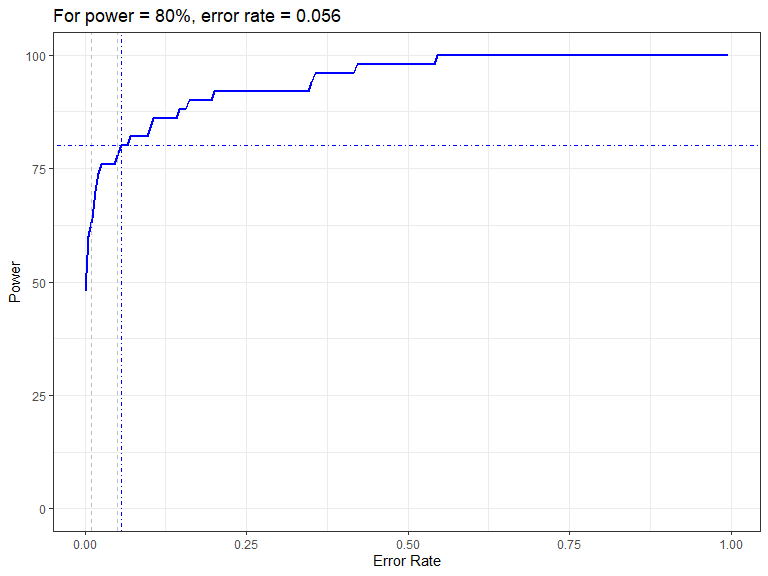
Figure showing how the power to detect change varies with the error rate chosen for the Forth and Tay redistribution analysis. The first grey dashed line is at 1% and the second at 5%, traditionally values used as -value cutoffs. The blue dashed lines indicate the error rate required to get a power of 80%. The value is given in the title.
plot.preds(powerout.nysted.re, cellsize=c(1000,1000))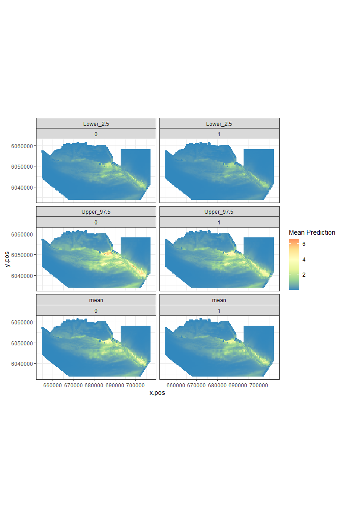
Figure showing the mean (middle), lower 2.5% (top) and upper 97.5% (bottom) of predicted animal counts before (left) and after (right) the event.
plot.diffs(powerout.nysted.re, cellsize=c(1000,1000))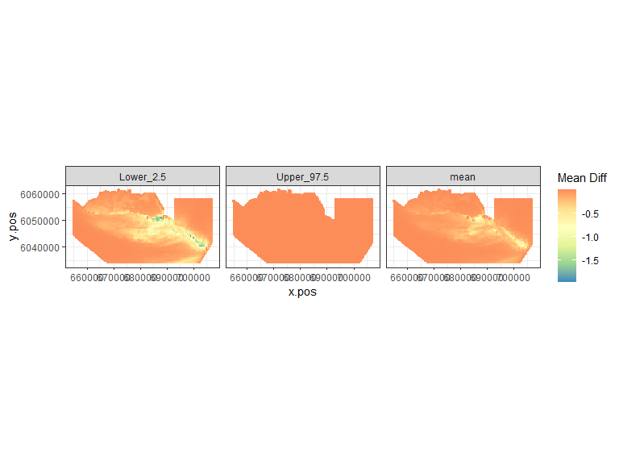
Figure showing the mean (middle), lower 2.5% (left) and upper 97.5% (right) of estimated differences between before and after the event. (difference = post - pre)
plot.sigdiff(powerout.nysted.re,
coordinates = predictdata[predictdata$eventphase==0,c('x.pos', 'y.pos')],
tailed='two', error.rate = 0.05, gridcell.dim = c(1000,1000))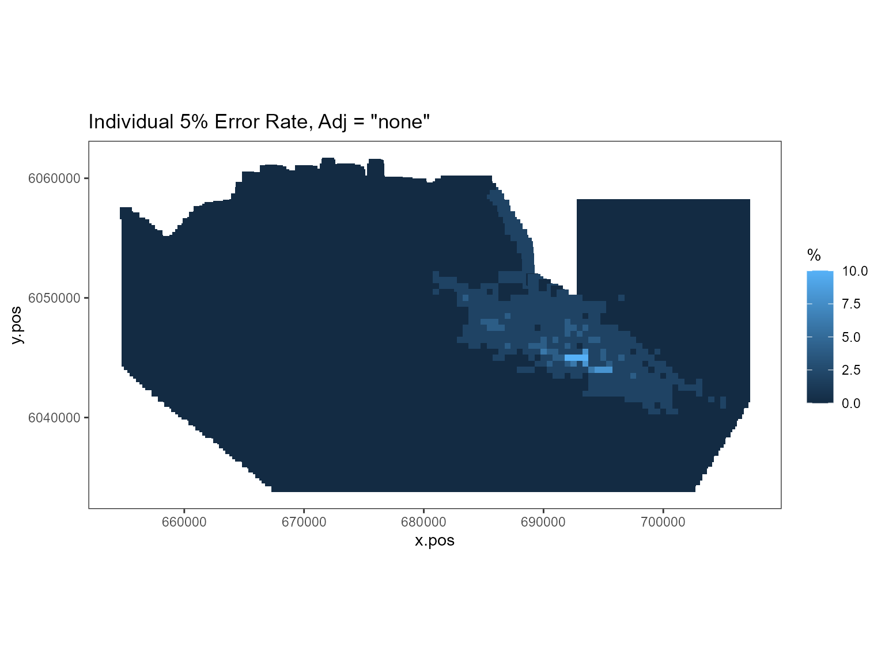
Figure showing, for every grid cell, the proportion of simulations that showed a significant difference.
plot.sigdiff(powerout.nysted.re,
coordinates = predictdata[predictdata$eventphase==0,c('x.pos', 'y.pos')],
tailed='two', error.rate = 0.05, adjustment='sidak', gridcell.dim = c(1000,1000))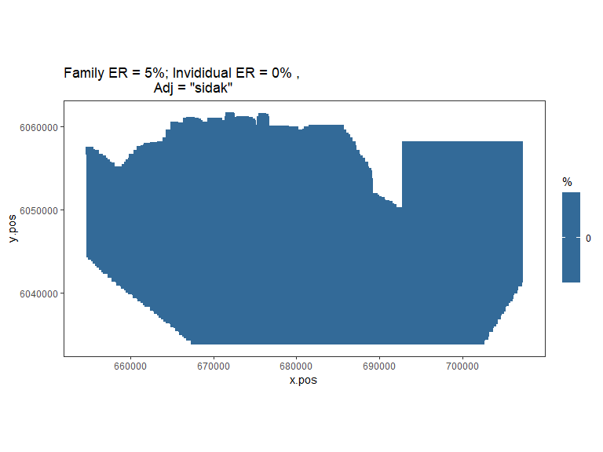
Figure showing, for every grid cell, the proportion of simulations that showed a significant difference.